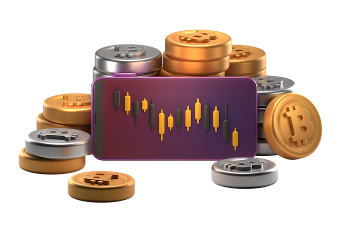
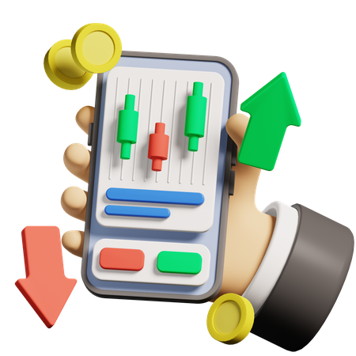
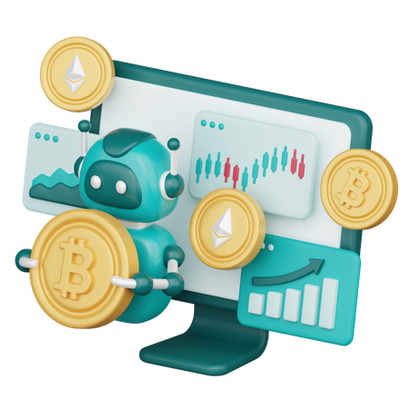

CoinsQ Dapps
Trading Platform
CoinsQ is a highly advanced trading platform represents a cuttingedge and sophisticated software solution that provides traders with
powerful tools and features to execute trades, analyze markets, and
make informed investment decisions. These platforms leverage the
latest technologies and innovations to offer an exceptional trading
experience, catering to the needs of both professional and individual
traders
Key characteristics of a highly advanced trading
platform include
Advanced Charting and Technical Analysis: The platform offers
comprehensive charting capabilities, allowing users to analyze
price movements, apply technical indicators, and identify
patterns to make informed trading decisions. It provides
customizable charting tools and indicators for in-depth market
analysis.
Real-time Market Data and News: Access to real-time market
data, including price quotes, order book depth, and trade history,
is essential for traders. A highly advanced platform provides
instant updates and integrates with various exchanges to offer
accurate and up-to-date information. It also delivers real-time
news feeds and economic calendars to keep traders informed
about market events.
Order Types and Execution: A variety of order types, such as
market orders, limit orders, stop orders, and conditional orders,
are crucial for executing trades according to specific strategies.
The platform supports a wide range of order types and ensures
efficient and fast order execution, minimizing slippage and
latency.
Risk Management Tools: Risk management is a critical aspect of
trading. An advanced platform provides risk management tools
like stop-loss orders, take-profit orders, and trailing stops to help
traders mitigate risks and protect their investments. It may also
offer position sizing calculators and risk-reward analysis tools.
Integration with Third-party Services: Highly advanced trading
platforms often integrate with third-party services, such as
financial data providers, advanced analytics tools, and tradin
algorithms, to enhance the capabilities of traders. These
integrations provide additional insights and functionality,
enabling users to make more informed trading decisions.
Algorithmic Trading and Automation: A sophisticated trading
platform may support algorithmic trading, allowing users to
develop and implement automated trading strategies. It offers a
user-friendly interface for designing, backtesting, and deploying
trading algorithms. Additionally, it may provide access to a
marketplace of pre-built trading bots or strategies.
Multi-Asset Support: A highly advanced trading platform typically
supports a wide range of financial instruments, including stocks,
cryptocurrencies, commodities, forex, and more. It allows traders
to access and trade multiple asset classes from a single
platform, streamlining their trading activities

CoinsQ Decentralized
Exchange (Trading Platform)
Decentralized exchanges (DEXs) offer several benefits compared to
traditional centralized exchanges. Here are some of the key
advantages of decentralized exchanges:
Security: Decentralized exchanges provide enhanced security
compared to centralized exchanges. Unlike centralized
exchanges that hold users' funds in a central repository, DEXs
operate on blockchain technology, where users have full control
over their funds through self-custody wallets. This reduces the
risk of hacking or theft from a centralized point of failure.
User Privacy: DEXs prioritize user privacy by allowing users to
trade directly from their wallets without the need for user
registration or KYC (Know Your Customer) procedures. This
preserves user anonymity and protects sensitive personal
information from being stored on a centralized platform.
Trustless Trading: DEXs enable trustless trading, meaning users
can engage in peer-to-peer transactions without the need for
intermediaries or trusted third parties. Smart contracts facilitate
the execution of trades, ensuring transparency and removing the
need to rely on a central authority for order matching and
settlement.
Control over Funds: DEXs empower users to have complete
control over their funds. Users retain ownership of their private
keys, ensuring that their assets are not held by a centralized
exchange or susceptible to frozen accounts or withdrawal
restrictions. This control enables users to maintain sovereignty
over their assets at all times.
Global Access: DEXs provide access to a global market without
geographical restrictions. Anyone with an internet connection
can participate in trading on decentralized exchanges, allowing for a more inclusive and accessible financial ecosystem. This
global access enables greater liquidity and a broader range of
trading opportunities.
Transparency: DEXs operate on transparent blockchain networks,
which means that all transactions and order books are visible to
the public. This transparency fosters trust among users, as
anyone can verify the integrity of the trading process and ensure
fair and open market conditions.
Lower Fees: DEXs often offer lower trading fees compared to
centralized exchanges. Since there are no intermediaries
involved, transaction costs are reduced, benefiting traders who
frequently engage in trading activities.
Resilience and Resistance to Censorship: DEXs are resistant to
censorship and government control. The decentralized nature of
DEXs makes them less vulnerable to shutdowns or regulatory
intervention, ensuring continuity of trading activities and
preserving user freedom.
Innovation and Token Diversity: DEXs support a wide range of
tokens and assets, including newly launched tokens and niche
cryptocurrencies. This encourages innovation and fosters the
growth of emerging projects, giving users access to a diverse
range of investment and trading opportunities.
While decentralized exchanges offer numerous benefits, it's
important to note that they also have certain limitations, such as
slower transaction speeds and lower liquidity for certain trading
pairs compared to centralized exchanges. However, the continuous
development and innovation in the DeFi space are addressing these
challenges, making decentralized exchanges an increasingly
attractive option for traders seeking a more secure, private, and
user-centric trading experience.

CoinsQ Centralized and
Decentralized Automated Robot
Trading Platform
Centralized and decentralized automated robot trading platforms
refer to two different approaches in the design and operation of
algorithmic trading systems. Here's a comparison of the two:
Centralized Automated Robot Trading Platform: In a centralized
automated robot trading platform, the trading system is operated
and managed by a central authority, typically a company or a
financial institution. Here are some key characteristics of centralized
platforms:
Centralized Control: The platform is controlled by a central entity
that develops and maintains the trading algorithms and
infrastructure. Users rely on the platform's infrastructure and
expertise to execute trades on their behalf.
User-Friendly Interface: Centralized platforms often provide userfriendly interfaces and tools that allow users to easily set up and
configure their trading strategies. They may offer features like
drag-and-drop strategy builders, backtesting capabilities, and
real-time market data.
Infrastructure Reliability: Centralized platforms typically have
robust infrastructure and technical resources to ensure reliable
trade execution and minimal downtime. They handle the
necessary connectivity to exchanges, data feeds, and order
routing systems.
Regulatory Compliance: Centralized platforms are more likely to
comply with regulatory requirements, such as KYC/AML (Know
Your Customer/Anti-Money Laundering) procedures, as they
operate within the legal framework of financial institutions
Decentralized Automated Robot Trading Platform: In a decentralized
automated robot trading platform, the trading system operates on a
decentralized network, often leveraging blockchain technology.
Peer-to-Peer Trading: Decentralized platforms facilitate direct
peer-topeer trading without the need for intermediaries. Users
can execute trades and interact with smart contracts on the
blockchain directly from their wallets.
Trustless Execution: The use of smart contracts ensures that
trades are executed automatically and transparently, without the
need to trust a central authority. The code within the smart
contract defines the rules and conditions of the trading strategy.
User Control and Privacy: Users have full control over their
funds as they interact with the platform through their own
wallets. Transactions and trading activities are pseudonymous,
preserving user privacy.
Resilience and Transparency: Decentralized platforms are
resistant to censorship and single points of failure. They leverage
the transparency and immutability of blockchain technology,
providing a more transparent and auditable trading
environment.
Lower Fees: Decentralized platforms often have lower fees
compared to centralized platforms since they eliminate the need
for intermediaries. However, users may incur network transaction
fees on the blockchain
It's important to note that both centralized and decentralized
automated robot trading platforms have their own advantages and
considerations. Centralized platforms may provide a more userfriendly experience, better infrastructure, and regulatory compliance,
while decentralized platforms offer increased control, privacy, and
resilience. The choice between the two depends on individual
preferences, risk tolerance, and specific trading requirements

Introducing Metaverse
Integration
Introducing Metaverse integration can bring several benefits to
various industries and applications. Here are some of the key
benefits of incorporating Metaverse technology:
Immersive and Engaging Experiences: Metaverse integration allows
for the creation of immersive and interactive experiences that go
beyond traditional user interfaces. Users can engage with virtual
environments, explore virtual worlds, and interact with digital
objects, leading to more engaging and captivating experiences.
Expanded Reach and Accessibility: Metaverse technology breaks
down geographical barriers and enables global access. It allows
users from anywhere in the world to connect and interact within the
virtual environment, expanding the reach and accessibility of
products, services, and experiences.
Enhanced Collaboration and Communication: Metaverse
integration enables real-time collaboration and communication in
virtual spaces. Teams and individuals can work together,
brainstorm ideas, and hold meetings in virtual environments,
fostering collaboration regardless of physical locations.
New Revenue Streams: The Metaverse presents opportunities for
new revenue streams and business models. Virtual goods, virtual
real estate, and digital assets within the Metaverse can be
monetized, creating economic opportunities for individuals and
businesses. This includes activities like virtual events, virtual
marketplaces, and in-game purchases.
Personalized and Customizable Experiences: Metaverse platforms
allow for personalization and customization of avatars,
environments, and experiences. Users can create and express their
unique identities and preferences, leading to more personalized
and tailored experiences.
Social Connectivity and Community Building: Metaverse integration
facilitates social connectivity and community building. Users can
interact with others, form communities, and engage in social
activities within the virtual environment. This fosters connections,
networking, and shared experiences, creating a sense of belonging
and community.
Virtual Training and Education: The Metaverse offers opportunities
for virtual training and education experiences. It allows for
simulations, virtual classrooms, and interactive learning
environments, providing a more immersive and engaging
approach to education and training.
Data and Analytics: Metaverse integration provides opportunities
for data collection and analytics. User interactions, preferences,
and behavior within the virtual environment can be captured and
analyzed, leading to insights that can drive improvements,
personalization, and targeted experiences.
Cross-Platform Integration: Metaverse technology can be
integrated with existing platforms and applications, enabling
seamless experiences and interactions across multiple devices
and platforms. This allows for continuity and convenience for users
as they transition between virtual and physical spaces.
Introducing Metaverse integration brings a new dimension to various
industries, including gaming, entertainment, social media,
education, e-commerce, and more. It offers unique opportunities for
innovation, engagement, and monetization, providing a dynamic
and interactive digital space for individuals and businesses to
explore and thrive.